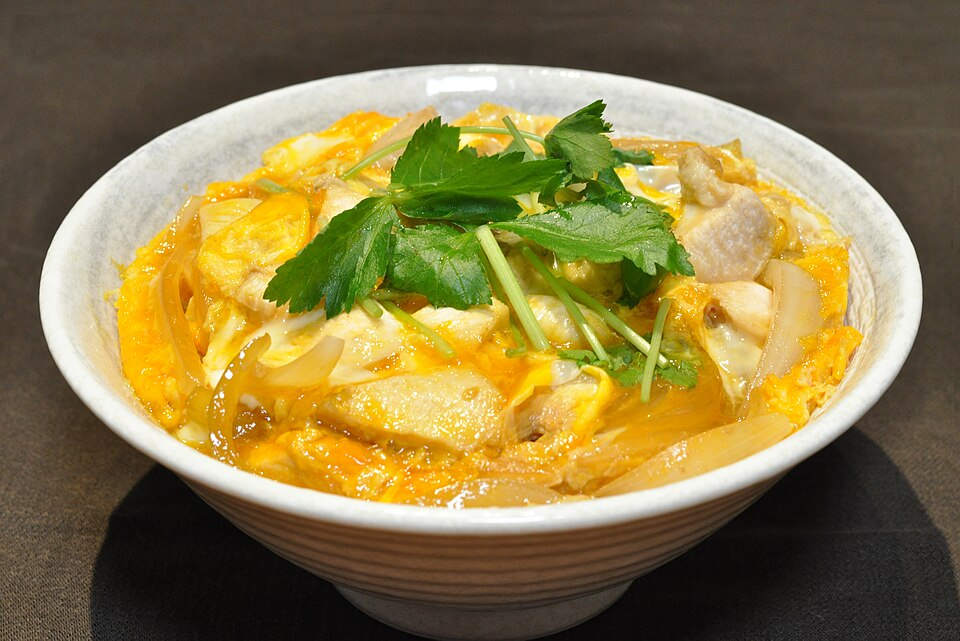

25 min · serves 2
Oyakodon
A weeknight classic: tender chicken, onion, and softly set egg in lightly sweet soy-dashi broth over rice.
Ingredients
- 300g chicken thigh, sliced
- 1/2 onion, sliced
- 2 eggs, lightly beaten
- 1 cup dashi
- 1.5 tbsp soy sauce, 1 tbsp mirin, 1 tsp sugar
- 2 bowls cooked rice
Method
- Simmer onion in dashi, soy, mirin, and sugar for 3 minutes.
- Add chicken and cook until just done.
- Pour in egg in two waves; cover briefly for soft curds.
- Slide over hot rice and finish with scallion.